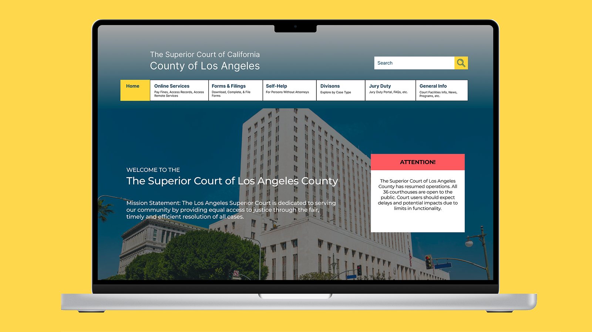

LA Court Website Redesign
Information Architecture & UX Research
A complete restructuring of the Los Angeles Court website's information architecture to help millions of users find essential services without confusion. Through extensive user testing and research, we reduced navigation complexity from 7 clicks to 3, achieving a 91% average task success rate and transforming a frustrating government website into a clear, trustworthy public resource.
View Project →